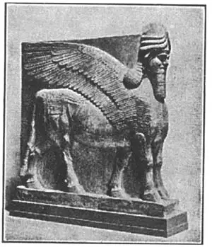
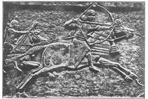

34
CHERUBS AND KINGS
基路伯和国王

CAN you speak Assyrian? What’s that? “Of course not”? But you know one word of Assyrian, I’m sure, even though you may have forgotten the country. Assyria is an old country as Egypt is, and it’s a thousand miles to the east of Egypt. The Assyrian word I think you know is “cherub.”
We call an angel head with wings a cherub. Sometimes we call a sweet baby a cherub. But an Assyrian cherub is neither. It’s a fairy-tale animal, either a lion or a bull with a man’s head and an eagle’s wings. In Assyria cherubs used to be made out of alabaster, which I know you remember is a kind of stone, usually white and softer than most of the stone the Egyptians had.
The Egyptian sphinx was a man-headed lion lying down. The Assyrian cherub was a man-headed bull standing up. Here is an Assyrian cherub. Notice its man’s head—how carefully and tightly the hair and beard are curled. Even the end of the cherub’s tail is curled.
Here is an easy puzzle. What’s wrong with this cherub? He has five legs! The sculptors knew, of course, that a bull had only four legs, but they made him with five legs so that a person looking at him from the front would see two legs together as if he were standing still, but when looking at him from the side would see the animal walking.
The next piece of Assyrian sculpture is in low relief. A king is drinking out of a bowl. A servant stands back of him, fanning him with a plume to brush away the flies.
Notice what muscles these men have-—how different from the Egyptian men, who were slender, with no muscles showing. The Assyrians thought that beauty was strength, that any one to be beautiful must be strong, so they showed their kings with big bulging muscles.

ASSYRIAN CHERUB（亚述的基路伯）
Courtesy of the Metropolitan Museum of Art
The Assyrians believed also that hair as well as muscles was a sign of strength and that no real man who could grow a beard would have a smooth face like a woman. You remember the Bible story of Samson, whose great strength was supposed to be due to his long hair and who, when this was cut off, became weak? You see, the king has long hair and a beard tightly curled like ropes, but the servant has no beard. That was because the servant was not supposed to be as strong or manly as the king—the king didn’t want him to be. Some people who have butlers nowadays make them keep their faces smooth.
Notice that the eye is like the Egyptian—front eye in a side view.
The men had more clothing on—shawls or skirts with tassels which came to their ankles—and they wore half sandals. They were not altogether barefooted.
The two chief things the Assyrian kings liked to do best—their two chief sports— were killing animals and killing people in battle, so most of their reliefs show them doing these things.
But the best things the Assyrian artists made were figures of animals. They made them much more lifelike than those of the Egyptians. In many reliefs the horses are fine spirited steeds and their manes and tails are tightly curled.
The Assyrians also made tiny reliefs on the curved surfaces of spool-shaped pieces of stone or clay. A small axle was put through the spool hole and the spool then became a tiny rolling-pin that could be rolled over any soft surface such as mud or wax and leave a flat imprint of the picture on the spool sides.
In this way they could make as many of these small reliefs as they pleased. We think, however, they used these seals to sign writing. They did not write on paper, as they had no paper. They wrote on mud bricks before the bricks were dried and they stamped their seal at the end instead of signing their names, as your mother may stamp her initials or crest in sealing wax, with a seal ring, after writing a letter.
These sculptures of the Assyrians have been dug up from the ruins of their old cities, carried away, and placed in museums, so that if you want to see them, you must go not to Assyria but to the British Museum in London, the Louvre in Paris, or to other great museums.
From what I have told you of Assyrian sculpture, how would you describe it in a few words?
Huge beasts called cherubs—with five legs
Strong and powerful men and animals
Hair and beards in rope-like curls
Low reliefs showing hunting and fighting scenes
Very natural looking animals
Small engraved spool-shaped seals
And that’s about all we know of Assyrian sculpture dug up from the ruins of their once great cities and carried to the museums of Europe and America. Not much left to tell the tale of the proud, powerful, and cruel tyrants that ruled over millions of people— monarchs, and their subjects all dead these thousands of years.

No.34-2 ASSYRIAN KING HUNTING（亚述王狩猎）
【中文阅读】
你会讲亚述话吗？那是什么语啊？“当然不会啦！”虽然你可能已经忘记了这个国家，不过我敢肯定你知道某个亚述语单词。同埃及一样，亚述也是一个古国，位于埃及以东一千多英里的地方。我想你知道的那个亚述词是“基路伯”。
我们称有翅膀的天使头领为基路伯。有时候，我们用它来称呼可爱的婴孩。但亚述语中的基路伯却没这两种意思。它指的是一种童话里的动物，或是狮身或是公牛身，加上人的脑袋和老鹰的翅膀。在亚述，人们通常用雪花石膏做基路伯。我想你还记得吧，雪花石膏是一种石头，通常是白色的，比埃及大部分的石头都要软。
埃及的斯芬克斯是一座躺着的狮身人面像。《亚述的基路伯》则是一座立式牛身人面像。下面是该雕像图。注意人面，看看头发和胡须紧凑在一起，卷得密密麻麻，甚至基路伯的尾梢也是卷的。
现在，我们来简单地问一下。这座雕像有什么问题吗？他竟然有五条腿！雕刻家当然知道公牛只有四条腿，他们刻五条腿，是让人从正面看时两腿相并，好像是站着的，而从侧面看时又像是在行走。
接下来是一件亚述浅浮雕。国王正在用碗喝酒，仆人站在身后，用羽毛为他赶苍蝇。
请留意浮雕中人发达的肌肉——和埃及人很不一样。埃及人偏瘦，看不到肌肉。亚述人认为美就是力量，一个人要美就必须强壮，所以他们雕刻的国王，都是肌肉隆起。
亚述人还相信头发一如肌肉，也是力量的象征，所以，真正的男人应当留胡须，脸蛋不能像女人那样光滑。还记得《圣经》中参孙的故事吗？据说，参孙的大力气来自他的长发，所以一旦头发被剃，便软弱如常。你看，这浮雕中的国王长着长发和卷得像绳子一样紧密的胡须，但是仆人却没有胡须。这是因为仆人不能像国王那样强壮或具有男子汉气魄——国王本就不愿仆人也强壮。就像现在那些有管家的人，总要管家把脸刮得干干净净。
留意一下人物的眼睛——他们和埃及人一样，也是在侧面刻上正视的眼睛。
衣服好像穿得多了些，穂状披肩和裙子拖到了脚踝，脚上穿的是露趾拖鞋，所以并没有完全赤脚。
亚述王最喜欢做的两件事或说两项运动，就是狩猎和打仗，所以他们大多数浅浮雕都是在刻画这两件事的场景。
不过，亚述艺术家们最擅长雕刻动物像。他们的动物雕像要比埃及的更加逼真。许多浅浮雕都刻有斗志昂扬的战马，马的鬃毛和尾巴都卷得紧紧的。
亚述人还在石或土制的圆轴体上雕刻小型浅浮雕。他们在圆轴体中央的孔洞里插一根小轴，使整个圆轴体能像擀面杖那样在任何柔软物体的表面滚来滚去，比如在泥 面或蜡面上。圆轴体滚过的地方都会留下柱身上雕刻的图案印痕。
用这种方法，他们想做多少这样的小型浅浮雕就做多少。然而，我们认为他们用这些来制作印章，再在他们的书写上盖印。他们不在纸上书写，因为没有纸张。他们在尚未晒干的泥砖上写字，最后盖上印章，而不是签名，就像你母亲写完信后可能会用封蜡的印章戒指把她名字的首字母盖上去一样。
亚述人的这些雕刻作品已经从他们古城的遗址中挖掘出来，然后运到了博物馆。所以，如果想看的话，千万不要去亚述，而要去伦敦的大英博物馆、巴黎的卢浮宫或其他大博物馆。
根据上面的介绍，你能用几句话对亚述的雕塑做一总结吗？
叫基路伯的巨兽——有五条腿，
还有强壮有力的男子和动物，
他们的头发和胡须像绳子那样卷着。
浅浮雕再现了狩猎和战斗的场景，
还有自然逼真的动物。
最后是小型圆轴体雕刻印章。
这就是我们所了解的关于亚述雕刻的全部内容。这些雕刻从曾经辉煌的城市废墟中挖掘出来，然后运到了欧洲和美国的博物馆。我们对那些自负、强壮但又残忍的暴君统治劳苦大众的故事知之甚少——那些君主和臣民早在几千年前就死去了。